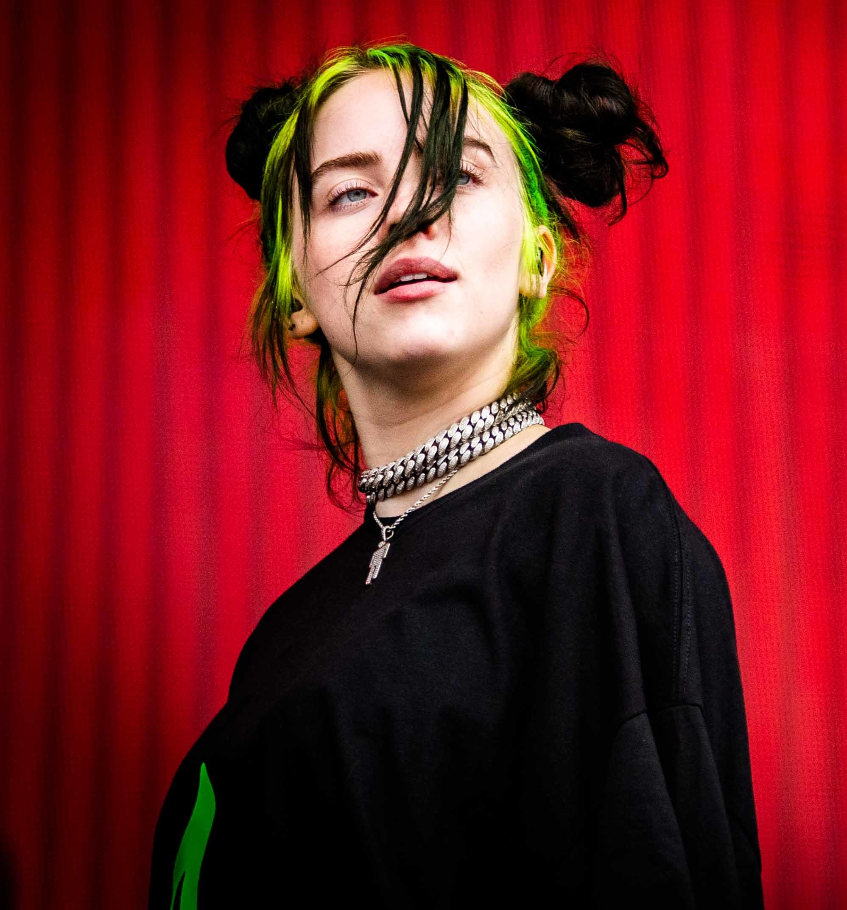
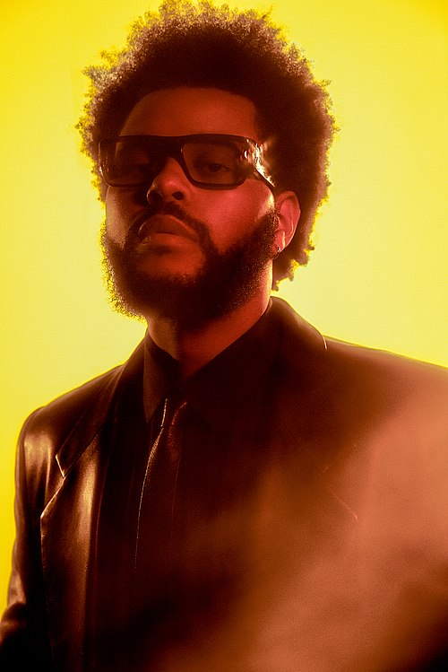
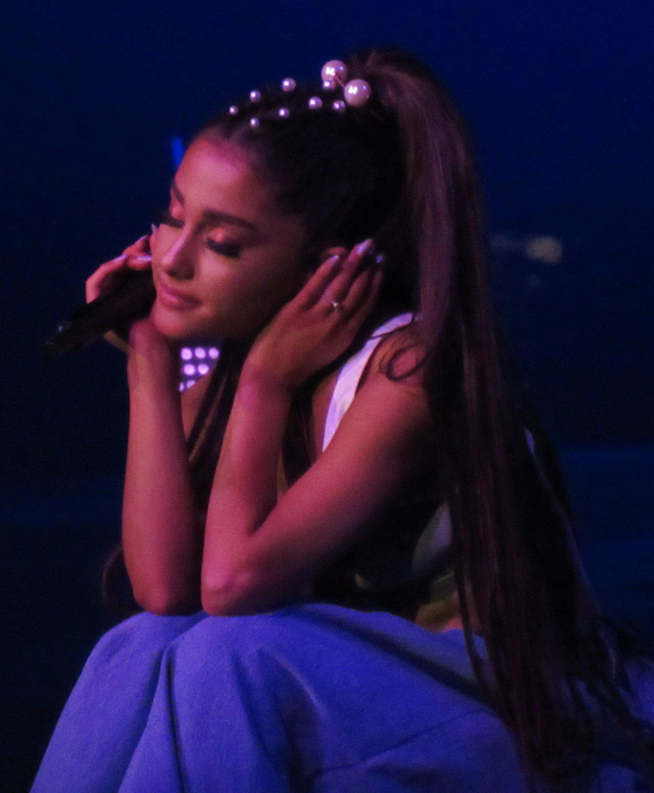

Billie Eilish
(Los Ángeles, California, 18 de diciembre de 2001), conocida simplemente como Billie Eilish, es una cantante, compositora, actriz y productora musical estadounidense. Ganó la atención del público por primera vez en 2015 con su sencillo debut «Ocean Eyes», escrito y producido por su hermano Finneas O'Connell, con quien colabora en música y espectáculos en vivo. En 2017, lanzó su primer EP, Don't Smile at Me. Comercialmente exitoso, alcanzó el top 15 de las listas de éxitos en numerosos países, incluidos Estados Unidos, Reino Unido, Canadá y Australia.

THE Weeknd
Abel Makkonen Tesfaye, conocido artísticamente como The Weeknd, es un cantante, compositor, productor discográfico y actor canadiense.Conocido por su versatilidad sónica y lirismo oscuro, su música explora el escapismo, el romance y la melancolía, y a menudo se inspira en experiencias personales

ARIANA GRANDE
Ariana Grande-Butera es una cantante, compositora, actriz, productora musical y empresaria estadounidense, Comenzó su carrera musical en Broadway a los 15 años en el musical 13. Saltó a la fama por interpretar a Cat Valentine en las series de televisión de Nickelodeon Victorious y Sam & Cat

DUA LIPA
Dua Lipa es una cantante, compositora y modelo albanobritánica. Nacida en Londres y criada entre su ciudad natal y Pristina, después de trabajar como modelo, firmó con Warner Records en 2014 y lanzó su álbum debut homónimo en 2017
.jpg)